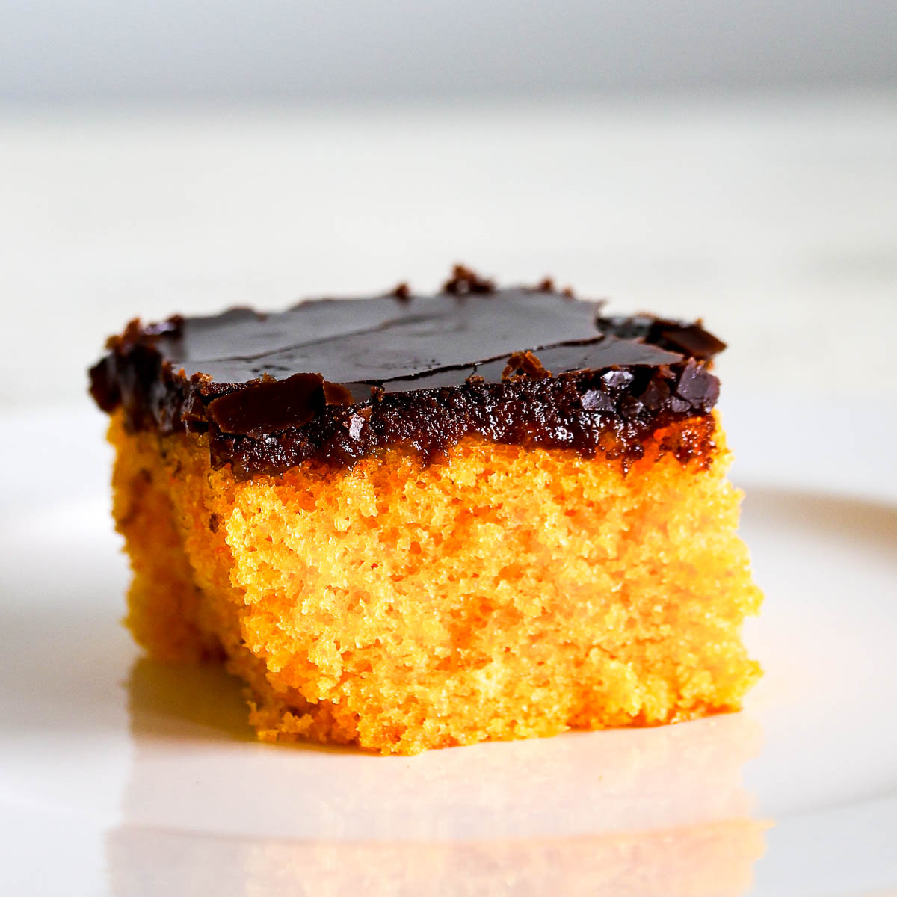

Return to homepage
Brazilian Carrot Cake

Desciption
Another brazilian classic recipe, this carrot cake is different from the American version, it is covered also with a chocolate topping
Ingredients
For the cake
- 300 g 10.6 ounces peeled carrots, cut into chunks
- 3 large eggs
- 1 3/4 cups sugar
- 1 cup vegetable oil
- Pinch of salt
- 2 cups flour, sifted
- 1 tablespoon baking powder, sifted
For the brigadeiro topping
- 3 ounces bittersweet chocolate, chopped
- 1 can, 14 ounces sweet condensed milk
- 2 tablespoons unsalted butter
- 1/2 cup heavy cream
- Chocolate sprinkles, optional
Steps
- Preheat oven to 350°F with a rack in the center. Butter and flour a 10-inch bundt pan. Reserve.
- In the jar of a blender, combine the carrots, eggs, sugar, oil and salt. Blend until smooth. Pour the mixture into a large bowl and, using a hand whisk, gently stir the flour and baking powder, until no traces of flour remain.
- Pour the batter into the prepared pan and bake for about 50 minutes or until a toothpick inserted in the middle comes out clean.
- Remove cake from oven and let it cool for 10 minutes. Then, run a butter knife along the edges, tap the pan firmly a few times and shake it gently to help loosen the cake. Invert the pan onto a cooling rack and let the cake continue to cool while you prepare the frosting.
- To make the brigadeiro, combine the chocolate, sweet condensed milk and butter in a saucepan. Cook the mixture, over medium-low heat, stirring constantly, until thickened and releasing from the bottom of the pan, about 10 minutes. Add the heavy cream and stir until smooth. The brigadeiro should be thick but pourable.
- Transfer the cake to a serving platter and pour the brigadeiro all over the cake. Decorate with chocolate sprinkles, if desired. Let it set for a few minutes before serving.